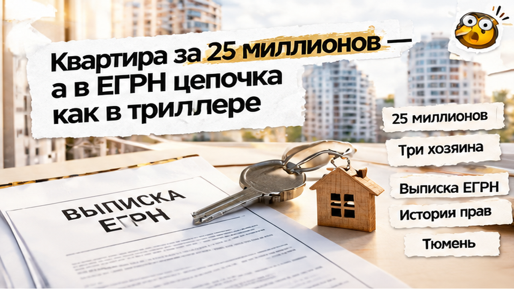
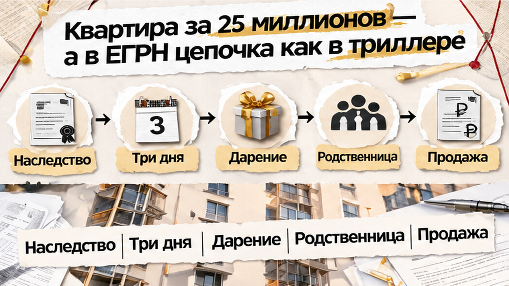
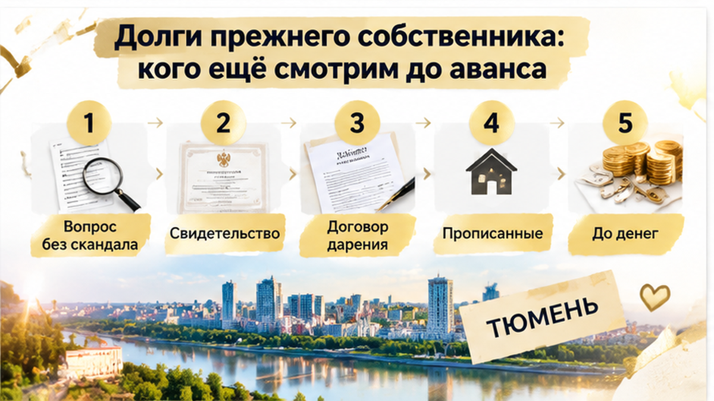
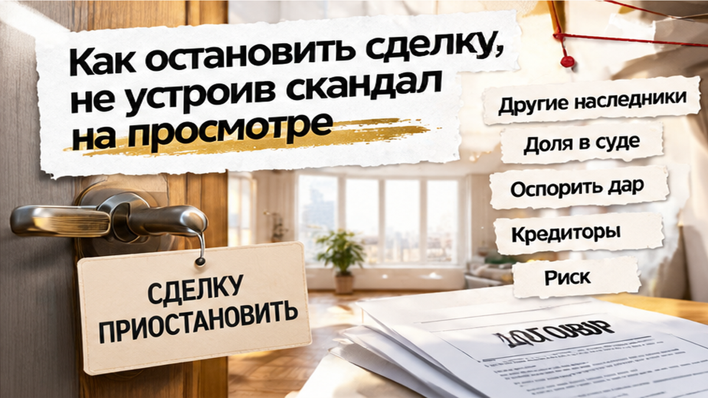

Задаток за квартиру за 25 миллионов в тот вечер не перевели — иначе семья втянулась бы в цепочку наследства, дарения за три дня и чужих долгов, которые всплывают уже после ДКП. В Тюмени за неделю у жилья сменилось три хозяина: в понедельник наследник, в четверг дарение родственнице, через несколько дней — продажа. Семья, которую вёл мой коллега, пришла с деньгами на счёте и почти внесла аванс. Продавец улыбалась, говорила «документы свежие» и торопила: второй покупатель уже ждёт в машине. Коллега открыл выписку с историей переходов — и пауза спасла от сделки с долговым хвостом.
Я Святослав Шакин, The Риэлтор, Тюмень. Разбираю вторичку до аванса, а не после перевода денег. Смотреть разборы и задать вопрос можно в Telegram и MAX.


Квартира была хорошая, и именно это первым делом усыпляет. Большой метраж, приличный дом, ремонт, цена для такой площади понятная. Покупатели уже продали своё жильё, деньги лежали на счёте, и им очень хотелось закончить с переездом. Когда люди устали искать, слова «документы свежие» звучат как плюс: собственник недавно всё оформил, значит, бумаги в порядке.
Коллега попросил не обычную выписку, где видно только нынешнего владельца, а выписку с историей переходов права. Через минуту картина стала другой. В ней было три собственника подряд: умерший владелец, его наследник и та, кому квартиру подарили. Каждая смена хозяина по отдельности законна. Но когда их несколько подряд, а между ними считанные дни, это уже не совпадение, а маршрут. На вопрос «почему так быстро» продавец ответила, что это внутрисемейное и к сделке отношения не имеет.
Смотрим даты. В начале недели наследник получает свидетельство и регистрирует право на квартиру. Через три дня он же дарит её родственнице. Ещё через несколько дней квартира висит на сайтах объявлений за 25 миллионов. Выходит, наследник владел жильём меньше недели, отдал его бесплатно, а продаёт уже совсем другой человек.
Тут любой спросит: зачем дарить, если можно продать самому и забрать деньги? Обычно у такого хода есть причина, и редко она про любовь к сестре. Бывает, что у наследника долги или дела у приставов, и квартиру уводят с его имени. Бывает, что в семье есть другие наследники, которых «не заметили», и дарение нужно, чтобы цепочка стала длиннее, а покупатель оказался подальше от спорной точки.
Продавец на просмотре ни одну из этих версий не подтвердила и не опровергла. Она просто повторяла, что всё чисто, и поглядывала на часы. А семья стояла в прихожей с телефоном, где уже был открыт банк, и не понимала, почему коллега вдруг перестал улыбаться.
На вторичке наследство считается одним из самых шатких оснований владения. Может объявиться наследник, о котором не знал нотариус. Например, ребёнок от первого брака или родственник, который пропустил срок по уважительной причине. Он вправе пойти в суд за своей долей. Тогда квартиру будут делить уже у того, кто её купил, и ваши 25 миллионов станут вашей проблемой, а не проблемой продавца.
Дарение поверх наследства этот риск не убирает, а только прячет его. Подарок — сделка бесплатная, и суд смотрит на такие придирчиво. Допустим, у дарителя есть кредиторы и потом против него начинают банкротство. Тогда передачу квартиры родственнице могут отменить: закон позволяет оспаривать такие сделки за три года до начала банкротства. Кроме того, наследник отвечает по долгам умершего в пределах стоимости наследства, и кредиторы покойного тоже будут искать, куда делось имущество. Похожий ход мы уже видели, когда квартиру подарили дочери за 48 часов до торгов, и там тоже всё выглядело «по-семейному».
Чем короче промежутки между хозяевами и чем больше в цепочке бесплатных сделок, тем больше людей, которые потом могут сказать: «Эта квартира должна была достаться мне». А самый удобный ответчик для них — последний покупатель, потому что деньги платил именно он. Поэтому коллега в тот вечер не торговался и не уговаривал продавца. Он сказал семье одну фразу: «Задаток сегодня не вносим».

Когда в выписке за неделю сменилось три человека, проверять одного продавца мало. Мы смотрели всех троих: умершего владельца, наследника и ту, кому квартиру подарили. Долги не исчезают оттого, что в выписке поменялась фамилия. Если у покойного были кредиты, банк придёт к наследнику, и отвечать тот будет в пределах стоимости наследства, то есть тех же 25 миллионов. Наследник, который через три дня дарит квартиру, вполне может уводить её от этих долгов. Тогда кредитор пойдёт в суд оспаривать дарение, и покупатель окажется третьим в очереди за чужие проблемы.
Второй слой — сам даритель. Если против него идёт банкротство или на нём висят крупные долги, суд может признать подарок близкому человеку подозрительной сделкой и отменить его. Квартира вернётся в общую массу, а свои деньги вы будете выбивать из нового собственника. Он к тому времени, скорее всего, уже купил что-то другое или просто уехал. Поэтому мы проверяем всех по базам судов, приставов и банкротства, а не только человека, который сидит напротив за столом. Коллеги на этом уже обжигались, когда на вторичке внесли аванс, а продавец показал рейтинг 800 и скрыл бюро. Красивая цифра на экране проверку не заменяет.
Третий слой — люди, которых в выписке нет вовсе. Это другие наследники: они могут восстановить срок через суд, если докажут, что не знали о смерти родственника. Сюда же относятся дети от первого брака, родители умершего, иждивенцы с обязательной долей. Отдельно смотрим долги по самой квартире: свет, капремонт, управляющую компанию. На фоне 25 миллионов это мелочь, но именно на ней семьи часто впервые понимают, что продавец что-то недоговаривает. Так было в истории, где за три дня до аванса всплыл долг за свет на 186 тысяч.
Такие разборы до аванса я выкладываю в Telegram и MAX: настоящие выписки, даты и что спросить у продавца.

Самая частая ошибка: увидеть странную дату в выписке и устроить допрос прямо в прихожей. Продавец обижается, риелтор с той стороны давит: «у нас ещё три показа сегодня». Дальше человек либо сдаётся и вносит аванс, чтобы не упустить вариант, либо уходит, так ничего и не узнав. В тот вечер всё прошло по-другому. Семья похвалила квартиру, сказала, что она им нравится, и спокойно попросила время на проверку документов. До любых денег.
Вопросы задавали без обвинений. Почему квартиру так быстро подарили и выставили? Кто ещё был наследником, есть ли от них отказы? Можно ли посмотреть свидетельство о наследстве и договор дарения, а не только свежую выписку? Если продавцу нечего скрывать, он отвечает и показывает. Если в ответ звучит «зачем вам это, всё чисто, банк же одобрит», это тоже ответ. Банк проверяет квартиру как залог для себя, а не ваши интересы.
Задаток в тот вечер не внесли. До аванса за 25 миллионов дело так и не дошло: деньги семьи остались на их счёте, а не в споре с наследниками и кредиторами трёх человек из выписки. Хороший продавец на паузу соглашается, ему тоже не нужен суд через год. А тот, кто требует деньги сегодня, «иначе уйдёт другому», заставляет решать под давлением. На такой сумме это самая дорогая ошибка.
Вопрос к вам. Наследство в понедельник, дарение в четверг, цена 25 миллионов и «второй покупатель уже ждёт». Вы бы взяли паузу и проверили всю цепочку или внесли задаток, чтобы квартира не ушла?
Когда семья вернулась к поиску, перед задатком мы снова требовали выписку ЕГРН с полной историей, свидетельство о наследстве и договор дарения — не «свежую» одну страницу и не устную отмазку. Спрашивали про других наследников и проверяли долги у всех из цепочки, не только у продавца за столом. Справку о прописанных брали до денег, а не в день ключей.
Честно скажу: ни одна бумага не даёт стопроцентной гарантии. И цепочка «наследство, дарение, продажа» сама по себе не значит обман. Это повод копать глубже и не торопиться с деньгами. Тот же сигнал спешки был в истории, где квартиру подарили дочери за 48 часов до торгов. А ещё банк может остановить сделку из‑за рассинхрона паспорта и ЕГРН — как в кейсе, где новый адрес в паспорте задержал сделку на десять дней.
Эта семья не потеряла ни задаток, ни год на суды и переписку с банком. Они просто прочитали даты в выписке до аванса, а не после. Хороших квартир с честной историей в Тюмени хватает, и купить такую можно спокойно, без «срочно, а то уйдёт».
Если вы сейчас смотрите квартиру и в выписке что-то царапает, не вносите задаток на эмоциях. Пришлите мне цепочку, я подключусь до денег, и разберём её вместе.